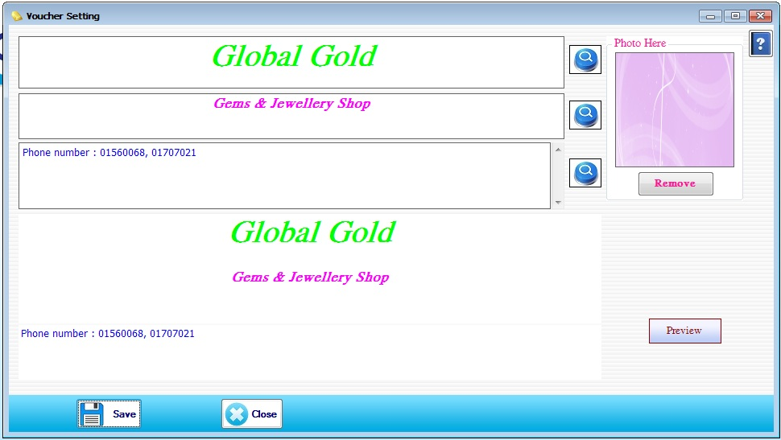

Voucher Setting Setup

- System Utilities အောက်မှ Voucher Setting Form ကိုဖွင့်ပါ။
- ပထမ ဇယားကွက်ထဲတွင် ဆိုင်အမည်ကိုရေးပါ။ ဒုတိယ ဇယားကွက်တွင် ဆိုင် Description ကို ဖြည့်စွက်ပါ။ တတိယဇယားကွက်တွင် ဆိုင်လိပ်စာကိုဖြည့်စွက်ပါ။ Photo တွင် Voucher နောက်ခံရောင်ကို Add Button နှိပ်ပြီး ထည့်သွင်းပေးရပါမည်။ ဘေးရှိ မှန်ဘီလူး button များသည် လိုချင်သောစာလုံးပုံစံ၊ အရွယ်အစား၊ အရောင်များကို စိတ်ကြိုက်ဖြည့်စွက်နိုင်ပါသည်။ Preview Button ကိုနှိပ်၍ ကြည့်ရှုနိုင်ပါသည်။
- Data များဖြည့်စွက်ပြီးပါက Save Button ကိုနှိပ်ပါ။ ပြန်လည်ပြင်ဆင်လိုပါက ပြင်ဆင်ပြီး Update Button ကိုနှိပ်ပါ။
- Voucher Setting Form ကို အသုံးပြုပြီးပါက Close Button ကိုနှိပ်ပြီး ပိတ်နိုင်ပါသည်။